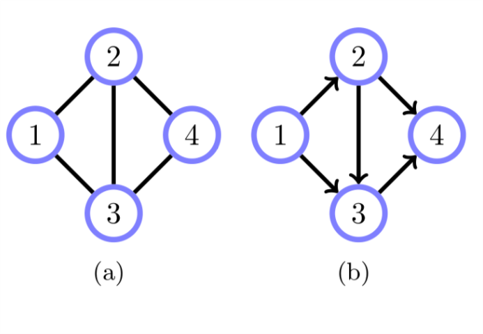
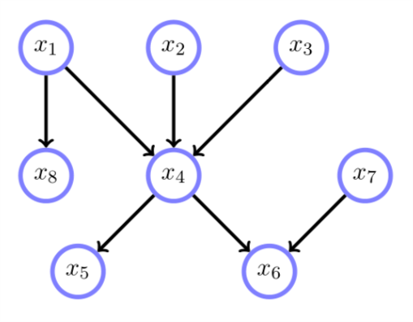
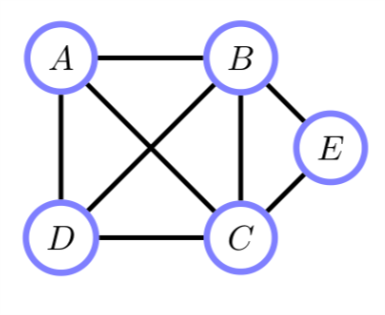

图论简介
本文非常简单的介绍一下与图有关的知识。在以后做贝叶斯网络，置信网络和马尔科夫网络分析的时候这些基本的概念将会被赋予具体的意义。图在机器学习里最重要的应用可能就是其矩阵表示。另外赋予了特殊意义的图在解决问题的时候抽象问题图形化，也方便分析问题，编写代码实现解决方案。对我而言，目前基于消息传递算法的LDPC译码，基于BCJR的Turbo码译码都用到了图这个强有力的工具。
1 图
图由节点和边构成。图的边可以是有向的也可以是无向的。有向的图叫做有向图，反之无向图。为图的边赋值一个权重可以用来建模网络流量或者城市之间的距离。在概率模型中我们赋予图一种概率的解释。无向图在推断和建模中发挥着重要的作用，比如构建马尔科夫网络或者其他概率模型。
一条从 \(A \mapsto B\)的路径是从\(A\)到\(B\)的一系列连接\(A\)和\(B\)的节点。也就是说一条路径可以是\(A_{0},A_{1},\ldots ,A_{n}\)，其中\(A_{0}=A,A_{n}= B\)，其中每两个相邻的节点之间有一条边\(A_{k},A_{k+1}\)相连。一个有向路径是指存在\(A\mapsto B\)而不存在\(B\mapsto A\)的路径。在\(A\mapsto B\)中\(B\)叫做\(A\)的后裔。

图 1: 有向图和无向图
一个有向环是指从一个节点出发经过若干条有向路径后又回到该点的路径，比如\(a\mapsto b\mapsto \ldots \mapsto z \mapsto a\). 一个无向环则是不考虑方向的环。例如图1 中图b的\(1-2-4-3-1\)只能构成一个无向环，但不能构成有向环。弦是一个无向环中链接两个不相邻点的边，比如图1 图a的\(2-3\)构成了\(1-2-4-3-2-1\)的一条弦。
有向无环图(Directed Acyclic Graph,DAG) 是一个由有向边构成的图，但是没有环。在DAG中，节点\(B\)的祖先是所有能够连接到该节点的点。

图 2: 有向无环图
在图2 中， \(x_{4}\)的父节点是\(pa(x_{4}) = \{x_{1},x_{2},x_{3}\}\)，\(x_{4}\)的子节点\(ch(x_{4}) = \{x_{5},x_{6}\}\)，一个点的family包含这个点本身和它的parents。一个点的Markov blanket包含它的parents，children以及children的parents，比如\(x_{4}\)的Markov blanket是\(x_{1},x_{2},x_{3},x_{5},x_{6},x_{7}\)
DAG在有大量随机变量建模的场景中广泛使用，特别是置信网络(belief networks).
给定一个无向图，一个clique死一个全连接的节点子集，即一个clique中的所有节点都是邻居。

图 3: clique
比如图3中有两个最大clique \(\mathcal{C}_{1} = \{A,B,C,D\},\mathcal{C}_{2} = \{B,C,E\}\) 尽管\(A,B,C\)是全连接的但是这个集合不是最大clique,因为有更大的clique包含它。不是最大的clique又叫做cliquo
在推断模型中，一个clique表示相互依赖的随机变量。在推断过程中一个clique中的变量结构无法更进一步的简化。
2 用矩阵表示图
机器学习的实质是实现概率推断，在这个过程中概率图模型是一个有力的工具。我们要对图进行数学表示，一种方便的表示方法是矩阵。矩阵是一种方便计算机操作的数学模型。比如图1a中的矩阵就可以表示为：
\begin{equation} \label{eq:12} \mathbf{A} = \begin{bmatrix} 0 & 1 & 1 & 0 \\ 1 & 0 & 1 & 1 \\ 1 & 1 & 0 & 1 \\ 0 & 1 & 1 & 0 \end{bmatrix} \end{equation}其中\(A_{ij} = 1\)表示第\(i\)个节点和第\(j\)个节点直接有一条边。\(0\)表示第\(i\)个节点和第\(j\)个节点之间没有边。一个有向图1b的矩阵表示为：
\begin{equation} \label{eq:1} \mathbf{T} = \begin{bmatrix} 0 & 1 & 1 & 0 \\ 0 & 0 & 1 & 1 \\ 0 & 0 & 0 & 1 \\ 0 & 0 & 0 & 0 \end{bmatrix} \end{equation}我们发现一个无向图的矩阵是对称的，一个有向图的矩阵是三角阵。
矩阵\(A\)看起来比较浪费，因为有很多\(0\)存在，但是这个矩阵却有一个重要的性质。那就是对于\(N\times N\)的矩阵 \(A\)的幂次\([\mathbf{A}^{k}]_{ij}\)表示从\(i\) 跳\(k\)步到\(j\)的路径一共有多少条。如果我们在\(A\)的对角线上放\(1\)则如果有从\(i\)到\(j\)的路径时\([\mathbf{A}^{N-1}]_{ij}\)是非零的。如果\(\mathbf{A}\)是DAG，则\([\mathbf{A}^{N-1}]\)的第\(j\)行表示节点\(j\)的孩子。